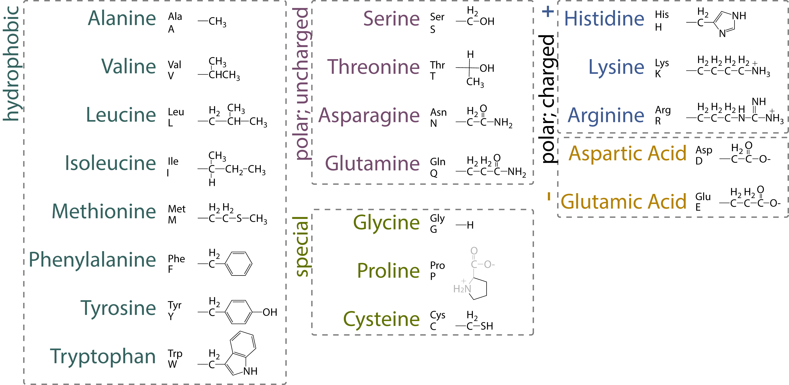
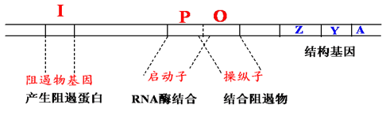
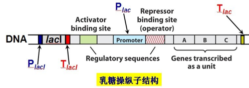
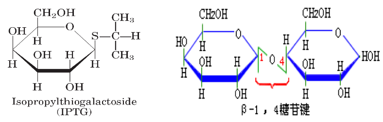
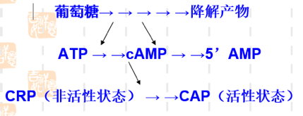

分子生物学基础
Contents
分子生物学基础¶
1. 微生物命名¶
1.1. 分类¶
分类
非细胞型：病毒、亚病毒
原核细胞型：细菌（支原体、衣原体、立克次氏体、放线菌和螺旋体）
真核细胞型：酵母、霉菌、原生动物、藻类
双名法
属名 + 种名（斜体）+ 命名者姓氏缩写（正体）
属名：首字母大写
种名：小写字母
名词所有格（表来源）
形容词主格（表性质）
1.2. 基因¶
一般方法（三部分）
3 lower case letters (pathway)
1 capital letter (actual gene)
1 allele number
突变体
Superscripts |
Meaning |
Example |
Comment |
|---|---|---|---|
+ |
Wild type |
\(leuA⁺\)- |
Mutant |
ts |
temperature sensitive |
\(leuA^{ts}\) |
|
cs |
cold sensitive |
\(leuA^{cs}\) |
|
am |
amber mutation |
\(leuA_{am}\) |
|
um |
umber (opal) mutation |
\(leuA_{um}\) |
琥珀突变 |
oc |
ochre mutation |
\(leuA_{oc}\) |
赭石突变 |
R |
resistant |
\(rif^R\) |
|
Δ |
deletion |
\(ΔleuA\) |
|
- |
fusion |
\(leuA-lacZ\) |
|
: |
fusion |
\(leuA:lacZ\) |
|
:: |
insertion |
\(leuA::Tn10Ω\) |
|
Δ(gene)::(resistance) |
deletion/replacement |
ΔleuA::npt |
1.3. 表型¶
first-letter capitalized
not italicized
DnaA⁻ the protein produced by the dnaA gene
LeuA⁻ the phenotype of a leuA mutant
2. 基因结构¶
2.1. 基础概念¶
基因（gene）：即遗传因子，是产生一条多肽链或功能 RNA 所需的全部核苷酸序列，即带有遗传讯息的 DNA 片段；
顺反子（cistron）：即结构基因，为决定一条多肽链合成的功能单位。顺反子在一定条件下与基因同义；
多顺反子 mRNA：含有编码一个以上蛋白质的编码信息，且，这些蛋白质均是以独立的多肽被翻译的 mRNA；
全酶（holoenzyme）：一些酶除蛋白质外，还含有对热稳定的小分子物质。前者称为酶蛋白（apoenzyme），后者称为辅因子（cofactor）。只有酶蛋白和辅因子结合成完整的分子时，才具有活力；
辅酶（coenzyme）：一类可将化学基团从一个酶转移到另一个酶上的有机小分子。与酶较为松散地结合，对于特定酶的活性发挥是必要的；

2.2. 复制、转录、翻译¶
复制
以 DNA 为模板，在 DNA 聚合酶的催化作用下，将四种游离的 dNTP 按照碱基互补配对原则合成新链 DNA，为半保留复制，需要引物。
转录
以 DNA 为模版，在 DNA 指导的 RNA 聚合酶的作用下，将四种游离的 NTP 按照碱基互补配对的原则合成 RNA，为半不连续转录，需要引物。
翻译
以 mRNA 为模板，原料为 20 中游离的氨基酸，3 个碱基决定 1 个氨基酸。
2.3. ORF、CDS¶
开放读码框（Open Reading Frame, ORF）是从一个起始密码子开始到一个终止密码子结束的一段序列；不是所有读码框都能被表达出蛋白产物或有生物学功能的蛋白；
CDS 必定是一个或多个 ORF；但，每个 ORF 不一定均是 CDS；
ORF = translation（理论可能）
CDS = transcription（事实存在）；
2.4. 启动子（Promoter）¶
位于编码区上游的非编码区。真核生物启动子包括下列几种不同顺序，能促进转录过程：
帽子位点
转录的起始位点；
TATA 框 （Hogness box）
似于原核生物的 Pribnow 框，决定转录起点的选择，为 RNA 聚合酶的结合处；
一致顺序为 TATAATAAT；
约在基因转录起始点上游约-30-50bp 处；
CAAT 框（CAAT box）
真核生物基因常有的调节区，控制转录的起始频率，可能亦为 RNA 聚合酶的结合处之一；
一致顺序为 GGGTCAATCT；
位于转录起始点上游约-80-100bp 处；
GC 框（GC box）
转录因子 Sp1 能识别 GC 框且与之结合，其 N 端有激活转录的作用；
由 GGCGGG 组成；
位于 CAAT 框的两侧，有 2 个拷贝；
2.5. 增强子（Enhancer）¶
又称远上游序列（far upstream sequence），一般都在-100bp 以上；
对依赖于 TATA 框的转录和不依赖 TATA 框的转录都有增强效应，但对前者增强效应高；
增强子是通过启动子来增加转录的，有效的增强子可位于基因的 5’端，也可位于基因的 3’端，有的还可位于基因的内含子中；
增强子的效应很明显，一般能使基因转录频率增加 10-200 倍，有的甚至可高达上千倍；
2.6. 终止子（Terminator）¶
在一个基因的末端往往有一段特定顺序，具有转录终止的功能，为反向重复序列，是 RNA 聚合酶停止工作的信号，反向重复序列转录后，可形成发夹式结构，且形成一串 U。发夹式结构阻碍了 RNA 聚合酶的移动，一串 U 的 U 与 DNA 模板中的 A 结合不稳定，从模板上脱落下来，转录终止。
3. 乳糖操纵子¶
3.1. 操纵子（Operon）¶
很多功能相关的结构基因串联排列在染色体上，由一个共同的控制区来操纵这些基因的表达，包含这些结构基因和控制区的整个核苷酸序列就称为操纵子。
1960∼1961 年，Monod 和 Jacob 首次提出”操纵子”学说（Lodish et al. 2000），获 1965 年诺贝尔生理学和医学奖；
1940 年，Monod 发现细菌在含葡萄糖和乳糖的培养基上生长时，细菌先利用葡萄糖，葡萄糖用完后，才利用乳糖；在糖源变换期，细菌的生长会出现停顿。即产生”二次生长曲线”。

3.2. 相关概念¶
组成型表达（constitutive expression）：在个体发育的任一阶段都能在大多数细胞中持续进行的基因表达，受环境因素的影响较少；
持家基因（housekeeping gene）：表达产物通常是对生命过程必需的、必不可少的基因；
诱导（induction）：在特定的环境信号刺激下，相应基因被激活，从而使基因的表达产物增加的过程；
阻遏（repression）：在特定环境信号刺激下，相应基因被抑制，从而使基因的表达产物减少的过程；
协调表达（coordinate expression）：在一定机制控制下，功能上相关的一组基因，无论其为何种表达方式，均需协调一致、共同表达，使各表达产物的分子比例适当，从而正常发挥功能的现象；
安慰诱导物（gratuitous inducer）：能诱导酶的合成，但又不被分解的分子；
3.3. 组成¶
三个特异性序列
操纵子 O（operator）: 阻遏蛋白结合位点，指能被调控蛋白特异性结合的一段 DNA 序列；
启动子 P（promoter）: 位于结构基因的上游，指能被 RNA 聚合酶识别、结合并启动基因转录的一段 DNA 序列；
CAP 结合位点：环 cAMP 受体蛋白（分解代谢物激活蛋白）结合位点；
一个调节基因
lac I：编码阻遏蛋白，能结合于操纵序列位点；
结构基因
结构基因（structural gene，SG）：操纵元中被调控的编码蛋白质的基因
Z 编码 β-半乳糖苷酶：将乳糖水解成葡萄糖和半乳糖；
Y 编码 β-半乳糖苷透过酶：使外界的 β-半乳糖苷（如乳糖）能透过大肠杆菌细胞壁和原生质膜进入细胞内；
A 编码 β-半乳糖苷乙酰基转移酶：乙酰 CoA 上的乙酰基转到 β-半乳糖苷上，形成乙酰半乳糖；

3.4. 多顺反子 mRNA¶
多顺反子 mRNA 在细菌中很普遍。多顺反子 lac mRNA 中的 lacZ，lacY，lacA 经翻译生成的产物分别生成代谢分解乳糖的三种酶，且始终存在着一定的比例关系（Z:Y:A = 5:2:1）
lacZ，lacY，lacA 基因的转录是由 lacI 基因指令合成的阻遏蛋白 R 所控制；
lacI 一般和结构基因相毗连，但它本身具有自己的启动子和终止子，成为独立的转录单位；
由于 lacI 的产物是可溶性蛋白，按照理说是无需位于结构基因的附近，它是能够分散到各处或结合到分散的 DNA 位点上；
4. 乳糖操纵子的调控¶
4.1. 阻遏蛋白的负调控¶
无乳糖：lac 操纵子处于阻遏状态（repression）；
有乳糖（presence of lactose）：lac 操纵子即可被诱导；
诱导剂（inducer）：别乳糖、半乳糖、IPTG（异丙基硫代半乳糖苷）
4.2. IPTG¶
由于乳糖虽可诱导酶的合成，但又随之分解，产生很多复杂的动力学问题，因此人们常用安慰诱导物来进行各种实验，如异丙基-β-D-硫代半乳糖苷（IPTG）；
IPTG 与自然的 β-半乳糖苷酶相似，且不能被酶分解，它的浓度在实验中不会改变。能在缺乏lacY基因下而有效地被运送。
半乳糖苷键中用硫代替了氧，失去了水解活性，但硫代半乳糖苷和同源的氧代化合物与酶位点的亲和力相同，IPTG 虽不为 β-半乳糖苷酶所识别，但它是 lac 基因簇十分有效的诱导物；
X-gal（5-溴-4-录-3-吲哚-β-半乳糖苷）亦为一种人工化学合成的半乳糖苷，可被 β-半乳糖苷酶水解产生兰色化合物，因此可用作 β－半乳糖苷酶活性的指示剂；IPTG 和 X-gal 都被广泛应用在分子生物学和基因工程的工作中；

4.3. CAP 的正调控¶
CAP （catabolite activator protein）：分解代谢基因激活蛋白，又称为 CRP（cAMP receptor protein），lac 操纵子高水平转录必需的一个激活蛋白；
CAP（同二聚体），含 DNA 结合区 以二聚体的方式与特定的 DNA 序列结合，cAMP 结合区与 cAMP 特异结合，并发生空间构象的变化，形成 cAMP-CAP 复合物（有活性）；
当 CAP 与 CAP 结合位点这段序列结合时，可激活 RNA 转录酶活性，使之提高 50 倍；
葡萄糖效应
当细菌在含有葡萄糖套和乳糖的培养基中生长时，通常优先利用葡萄糖。只有当葡萄糖消耗完，经过一段停滞期，在乳糖的诱导下半乳糖苷酶开始合成，细菌才能充分利用乳糖。葡萄糖的降解物能抑制腺苷酸环化酶活性，并活化磷酸二脂酶，因而降低 cAMP 的浓度。故葡萄糖存在时，cAMP 浓度低；仅在葡萄糖消耗完毕时，cAMP 浓度增高，CAP-cAMP 复合物形成（结合于 lac 操纵子 CAP 结合位点），才会促进转录。

4.4. 协调调控¶
由于 \(P_{lac}\) 是弱启动子，单纯因乳糖的存在发生去阻遏使 lac 操纵元转录开放，还不能使细菌很好利用乳糖，必需同时有 CAP 来加强转录活性，细菌才能合成足够的酶来利用乳糖；
关键条件：lac 操纵子的强诱导既需要有乳糖的存在又需要没有葡萄糖可供利用。
4.5. 阻遏蛋白和 CAP 的双重调控¶
负调节与正调节协调合作
阻遏蛋白封闭转录时，CAP 不发挥作用；
如没有 CAP 加强转录，即使阻遏蛋白 R 从 P 上解聚仍无强大转录活性；
葡萄糖可降低 cAMP 浓度，阻碍其与 CAP 结合从而抑制转录；
本底表达
在细胞中透性酶等总是以最低量存在着，足以供给底物开始进入时的需要。即，操纵子有一个本底水平（basal level）的表达，即使没有诱导物的存在，也保持此表达水平（诱导水平的 1‰）；有的诱导物是通过其他吸收系统进入细胞的。
5. 出芽酵母基因的命名¶
Dominant gene: 3 upper case letters + 1 number
Recessive gene: 3 lower case letters + 1 number
Alleles: gene symbol + a hyphen + 1 italic Arabic number, e..g., act1-606, his2-1
Protein: Proteins are referred to by the relevant gene symbol, non-italic, initial letter uppercase and with the suffix p, e.g., Ade5p, Cdc28p
Phenotypes: a non-italic three-letter abbreviation corresponding to the gene symbol, initial letter uppercase. e.g., Arg⁻, Arg⁺。